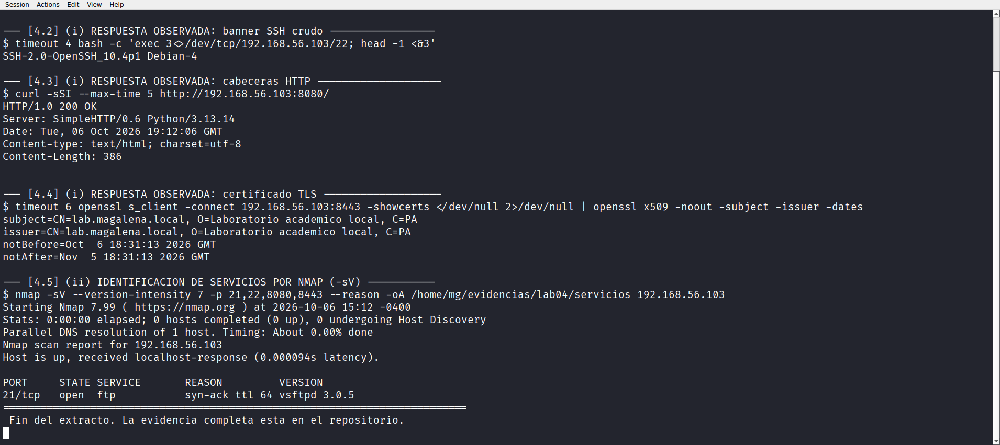
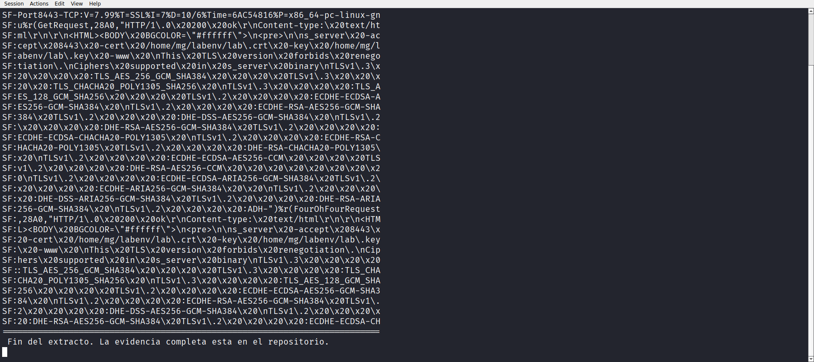
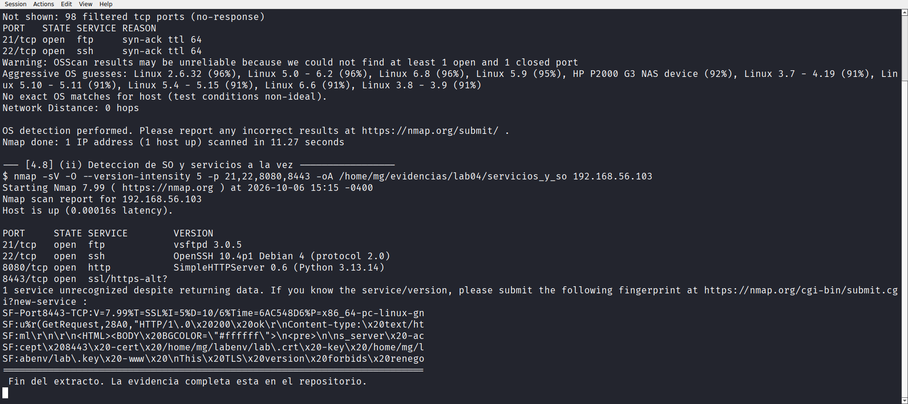

Laboratorio 04 de 06 · Estado completado
Servicios y sistema operativo
Qué responde cada puerto abierto, cuánta versión puede determinarse con precisión y dónde termina el alcance de la herramienta. El puerto 8443 devuelve datos y Nmap no consigue nombrarlo, y ese fallo se documenta igual de cuidadosamente que los aciertos.
1. Resumen para una persona de selección
Con el inventario de puertos ya cerrado en los laboratorios anteriores, este trabajo se concentra en una pregunta distinta. No es qué puertos están abiertos, sino qué está respondiendo en cada uno y con cuánta confianza puede afirmarse.
Se atacó por dos vías. La primera fue leer la respuesta que cada servicio entrega por sí mismo, sin ninguna interpretación de la herramienta. La segunda fue dejar que Nmap determine versión y sistema operativo con su motor de identificación. Los resultados coinciden en tres de cuatro puertos y divergen en el cuarto, que es justo donde aparece lo interesante.
Laboratorio académico sobre una máquina virtual propia, ejecutado por acceso SSH. El objetivo autorizado sigue siendo 192.168.56.103. No hay experiencia profesional, clientes ni certificaciones involucradas.
2. Objetivo técnico
Obtener la identificación de servicio de los cuatro puertos abiertos por dos caminos independientes, comparar ambos resultados y dejar documentado con precisión el punto donde la herramienta deja de poder afirmar.
- Leer el banner o las cabeceras que cada servicio entrega sin intermediarios.
- Determinar versión con
-sVy el máximo nivel de intensidad. - Intentar identificar el sistema operativo del equipo.
- Registrar explícitamente los puertos que no logran identificarse y el motivo observable.
3. Entorno y alcance
Se reutiliza sin modificaciones la línea base de los laboratorios 01 a 03. Máquina Kali Linux 2026.3 en VirtualBox, usuario mg, Nmap 7.99, objetivo autorizado 192.168.56.103 más el bucle de trabajo 127.0.0.1.
Único objetivo 192.168.56.103 y su interfaz de bucle. Todas las pruebas de este laboratorio son de lectura, ninguna modifica el equipo.
El anfitrión Windows, la pasarela NAT, el resto de la subred host-only y cualquier red externa. No se realizó fuerza bruta, ni explotación, ni denegación de servicio.
3.1 Servicios que se esperaban encontrar
El Laboratorio 01 ya había inventariado cuatro puertos en escucha. Este trabajo parte de ese listado y no abre ninguno nuevo.
| Puerto | Servicio declarado por el sistema | Origen |
|---|---|---|
21/tcp | vsftpd | Del sistema, corriendo como raíz |
22/tcp | sshd | Del sistema, corriendo como raíz |
8080/tcp | python3 | Añadido para el laboratorio |
8443/tcp | openssl | Añadido para el laboratorio |
4. Conocimientos previos
Antes de ejecutar nada conviene distinguir tres conceptos que este laboratorio pone a prueba por separado.
- Banner. Texto que el servidor manda por su cuenta apenas se conecta el cliente. FTP y SSH lo hacen, HTTP lo entrega solo si se le pide.
- Identificación de versión. Nmap envía estímulos al servicio y compara la respuesta con una base de datos de firmas. El nivel de intensidad decide cuántos estímulos intenta.
- Detección de sistema operativo. Aprovecha particularidades del protocolo TCP, como el orden de los campos y el tamaño de la ventana, para adivinar el kernel.
La distinción importa porque las tres pueden fallar de formas distintas y una herramienta que no identifica un servicio no está fallando, está informando.
5. Procedimiento reproducible
Cinco ejecuciones, cada una guardada en su propio archivo para poder auditarlas por separado.
- Leer el banner crudo de FTP y de SSH con una conexión TCP directa, sin herramienta de escaneo de por medio.
- Pedir las cabeceras HTTP al puerto 8080 con
curl. - Leer el certificado del puerto 8443 con
openssl s_client. - Ejecutar
-sVcon intensidad máxima sobre los cuatro puertos. - Ejecutar
-Opara detección de sistema operativo, sola y combinada con-sV.
Todas las ejecuciones quedaron registradas con script en evidencias/lab04/e04_servicios_so.typescript.
6. Comandos exactos y explicación de sus opciones
$ timeout 4 bash -c 'exec 3<>/dev/tcp/192.168.56.103/21; head -1 <&3'
220 (vsFTPd 3.0.5)
$ timeout 4 bash -c 'exec 3<>/dev/tcp/192.168.56.103/22; head -1 <&3'
SSH-2.0-OpenSSH_10.4p1 Debian-4
$ curl -sSI --max-time 5 http://192.168.56.103:8080/
$ timeout 6 openssl s_client -connect 192.168.56.103:8443 -showcerts </dev/null \
2>/dev/null | openssl x509 -noout -subject -issuer -dates/dev/tcp es una extensión de Bash que convierte una ruta en un descriptor de archivo, de modo que la conexión TCP se abre sin instalar nada. timeout evita que la sesión se quede colgada si el servicio no contesta. curl -sSI pide solo las cabeceras con una petición HEAD. -showcerts fuerza a que se entregue el certificado, y -noout en el segundo openssl evita imprimir el cuerpo del PEM.$ nmap -sV --version-intensity 7 -p 21,22,8080,8443 --reason \
-oA /home/mg/evidencias/lab04/servicios 192.168.56.103-sV activa el motor de identificación de versiones. --version-intensity 7 es el máximo permitido, hace que Nmap agote la lista de estímulos disponibles para el servicio antes de rendirse. -p limita la prueba a los cuatro puertos abiertos conocidos y así evita pagar el coste de un barrido completo. --reason añade el motivo por el que se clasificó cada puerto.$ nmap -O --reason -p 1-100 -oA /home/mg/evidencias/lab04/os_target 192.168.56.103
$ nmap -sV -O --version-intensity 5 -p 21,22,8080,8443 \
-oA /home/mg/evidencias/lab04/servicios_y_so 192.168.56.103-O necesita al menos un puerto abierto y uno cerrado para comparar respuestas. Por eso se le pasó una franja en lugar de solo los puertos conocidos. En la segunda ejecución se bajó la intensidad a 5 para que la prueba conjunta no se volviera demasiado larga.7. Resultados observados
7.1 Lo que cada servicio dice por sí mismo
La vía más honesta es preguntarle al servicio y no a una base de firmas. FTP y SSH entregan su identidad apenas se conecta el cliente, sin que nadie lo pida.
220 (vsFTPd 3.0.5)
SSH-2.0-OpenSSH_10.4p1 Debian-4
HTTP/1.0 200 OK
Server: SimpleHTTP/0.6 Python/3.13.14
Date: Tue, 06 Oct 2026 19:12:06 GMT
Content-type: text/html; charset=utf-8
Content-Length: 386
subject=CN=lab.magalena.local, O=Laboratorio academico local, C=PA
issuer=CN=lab.magalena.local, O=Laboratorio academico local, C=PA
notBefore=Oct 6 18:31:13 2026 GMT
notAfter=Nov 5 18:31:13 2026 GMTe04_servicios_so.typescript.Tres detalles merecen atención. El banner de FTP incluye el nombre entre paréntesis, lo cual es habitual en configuraciones por defecto de vsftpd. El identificador del servidor HTTP revela lenguaje, versión del servidor y versión del intérprete, tres datos en una sola cabecera. Y el certificado del 8443 está firmado a sí mismo, con el mismo nombre en emisor y en sujeto, válido solo un mes.

curl y datos del certificado leídos con openssl.7.2 Identificación con el motor de Nmap
Con intensidad máxima el motor identificó tres de los cuatro servicios y coincidió exactamente con lo que los propios servicios habían declarado.
PORT STATE SERVICE REASON VERSION
21/tcp open ftp syn-ack ttl 64 vsftpd 3.0.5
22/tcp open ssh syn-ack ttl 64 OpenSSH 10.4p1 Debian 4 (protocol 2.0)
8080/tcp open http syn-ack ttl 64 SimpleHTTPServer 0.6 (Python 3.13.14)
8443/tcp open ssl/https-alt syn-ack ttl 64
1 service unrecognized despite returning data.
-sV con intensidad máxima y la huella que Nmap ofrece enviar a su base de datos porque no consiguió clasificar el puerto 8443.El texto completo del aviso dice 1 service unrecognized despite returning data. Nmap no dice que el puerto esté vacío, dice que recibió datos y no los reconoció. En el mismo bloque aparece la huella completa de la respuesta, lista para enviarse a nmap.org/cgi-bin/submit.cgi?new-service.
Al leer esa huella aparece la explicación. El servicio del 8443 es un openssl s_server lanzado con -www, y lo que devuelve es una página HTML con la lista de cifrados soportados. Nmap espera una respuesta TLS estándar y recibe una página web embebida dentro del canal cifrado, algo que su base de firmas no contempla.
7.3 Detección de sistema operativo
La detección de sistema operativo fue la que peores resultados dio, y el propio Nmap explica por qué.
Warning: OSScan results may be unreliable because we could not
find at least 1 open and 1 closed port
Aggressive OS guesses: Linux 2.6.32 (96%), Linux 5.0 - 6.2 (96%),
Linux 6.8 (96%), Linux 5.9 (95%), Linux 3.7 - 4.19 (91%),
Linux 5.10 - 5.11 (91%), Linux 5.4 - 5.15 (91%), Linux 6.6 (91%)
No exact OS matches for host (test conditions non-ideal).
Network Distance: 0 hops
Cuatro observaciones sobre esta salida. Todas las conjeturas apuntan a Linux, con lo cual el objetivo queda acotado correctamente. El porcentaje más alto es 96 % y se repite en tres kernels distintos, lo cual significa que la firma no discrimina entre versiones. El aviso explica que faltó un puerto cerrado para comparar, porque el barrido de 1 a 100 solo encontró abiertos el 21 y el 22, y el resto quedó filtrado. Y Network Distance: 0 hops confirma desde otra fuente lo que el Laboratorio 01 ya había demostrado, que el escaneo es local.
7.4 Prueba combinada
La última ejecución juntó -sV y -O en un solo pase, con intensidad moderada. Devolvió las mismas versiones en los tres puertos identificables, lo cual confirma que los dos motores no interfieren entre sí.
8. Evidencias vinculadas
| Archivo | Contenido |
|---|---|
e04_servicios_so.typescript | Transcripción completa de las cinco ejecuciones, con banners, identificación y detección de sistema operativo |
servicios.nmap y anexos | Salida normal, XML y grepable de -sV con intensidad máxima |
os_target.nmap y anexos | Salida de la detección de sistema operativo |
servicios_y_so.nmap y anexos | Salida de la prueba combinada de servicios y sistema operativo |
lab04-banners.png | Captura de las respuestas observadas de cada servicio |
lab04-versiones.png | Captura de la identificación con -sV |
lab04-so.png | Captura de la detección de sistema operativo |
Los archivos con extensión .xml son la fuente primaria cuando hace falta leer el detalle de la huella, porque la salida en pantalla trunca el bloque SF-Port8443-TCP.
9. Interpretación técnica
Evidencia. Los banners de FTP y de SSH coinciden exactamente con lo que -sV informa, vsftpd 3.0.5 y OpenSSH 10.4p1 Debian 4.
Interpretación. Cuando el servicio entrega la versión por su propia cuenta, la identificación deja de ser una deducción y pasa a ser una lectura. El motor de firmas solo confirma lo que ya estaba a la vista. En un informe real conviene citar el banner como fuente primaria y la herramienta como confirmación.
Evidencia. El puerto 8080 declaró Server: SimpleHTTP/0.6 Python/3.13.14 en las cabeceras, y -sV informó SimpleHTTPServer 0.6 (Python 3.13.14).
Interpretación. La cabecera Server es un vector de información directo. Cualquier cliente HTTP la recibe sin autenticación. En este caso revela que detrás del puerto hay un servidor de desarrollo de Python y no un servidor de producción, dato que cambia por completo la valoración del riesgo.
Evidencia. El puerto 8443 devolvió datos y Nmap informó unrecognized despite returning data, con la huella completa disponible para envío.
Interpretación. No se trata de un fallo. La herramienta separa dos situaciones muy distintas, un puerto que no responde y un puerto que responde con algo desconocido, y elige informar en lugar de conjeturar. La huella contiene s_server -accept 8443 -cert /home/mg/labenv/lab.crt -key /home/mg/labenv/lab.key -www, lo cual confirma el origen del servicio y confirma también que las rutas de la clave privada quedan expuestas en la respuesta.
Evidencia. La detección de sistema operativo no produjo coincidencia exacta, con el aviso de que faltó un puerto cerrado.
Interpretación. El método compara un puerto abierto con uno cerrado. En este equipo la franja 1 a 100 solo devolvió dos abiertos y 98 filtrados, sin ninguno cerrado, así que la comparación no pudo completarse. El problema no es del objetivo sino de la elección de la franja.
Evidencia. El certificado del 8443 tiene el mismo nombre en emisor y sujeto, es de 2048 bits con firma SHA-256 y vence un mes después de emitirse.
Interpretación. Es un certificado autofirmado generado para el laboratorio. Que sea de un solo mes es una buena práctica incluso en pruebas, porque evita que queden credenciales caducadas arrastrándose por el repositorio.
10. Implicación defensiva y recomendaciones
Lo que este laboratorio deja claro es que la identificación de servicios es, antes que nada, una gestión del nivel de confianza.
- Una versión confirmada por el propio banner admite búsqueda de vulnerabilidades directa. Una versión deducida por firma debe tratarse como hipótesis.
- La cabecera
Serverde HTTP entrega lenguaje y versión a cualquiera. En un servicio real debería suprimirse o reducirse a un valor genérico. - Un
openssl s_serveren producción con-wwwpublica la lista de cifrados y las rutas de los ficheros de certificado. Es un patrón de laboratorio, no de despliegue. - Un certificado autofirmado no es una vulnerabilidad, pero en un servicio accesible desde fuera sí lo es la falta de revocación y la ausencia de una autoridad de confianza.
- La detección de sistema operativo da conjeturas, no hechos. Presentar un 96 % como si fuera una certificación sería incorrecto.
El valor de este informe no es saber qué versión corre cada puerto. Es poder explicar cuándo se puede afirmar algo y cuándo no, y qué evidencia sostiene cada afirmación.
11. Errores, limitaciones y puntos pendientes
| # | Limitación | Impacto | Estado |
|---|---|---|---|
| L1 | El puerto 8443 no logra identificarse con -sV |
No puede confirmarse la versión exacta del servicio TLS por la vía del escáner | Documentado, con huella disponible |
| L2 | La detección de sistema operativo no dio coincidencia exacta | Solo hay conjeturas, ninguna admite citarse como resultado | Documentado, con el motivo declarado por la herramienta |
| L3 | No se comparó el banner con la base de datos de vulnerabilidades | No se puede afirmar si las versiones encontradas son vulnerables | Fuera del alcance de este laboratorio |
| L4 | La intensidad máxima no garantiza identificación | Conviene no presentar --version-intensity 7 como una garantía |
Aprendido y registrado |
Los puntos pendientes se dejan escritos. Enviar la huella del 8443 a la base de datos pública de Nmap es una contribución posible, pero requiere autorización y no aporta valor a un laboratorio propio.
12. Conclusión
El laboratorio identificó con exactitud tres de los cuatro puertos abiertos y dejó debidamente documentado el cuarto. Las dos vías de identificación, la lectura directa del servicio y el motor de firmas de Nmap, coincidieron en los tres casos.
El resultado más útil no es el inventario de versiones. Es la constatación de que una herramienta que no identifica un servicio puede estar dándole la razón al usuario. Nmap separó con claridad entre no responder y responder con algo desconocido, entregó la huella y se abstuvo de inventar una respuesta.
El mismo criterio se aplica a la detección de sistema operativo. Tres conjeturas con 96 % de probabilidad no son un resultado, y el propio informe lo dice. Saber cuándo una herramienta está conjeturando es tan importante como saber leer cuando acierta.
13. Preguntas de entrevista sobre esta práctica
- ¿Qué diferencia hay entre un banner y la identificación con
-sV? El banner lo entrega el servicio por su cuenta y es una fuente primaria. La identificación con-sVes una comparación de firmas y produce una hipótesis. - ¿Por qué el puerto 8443 no se identificó si devolvía datos? Porque la respuesta no coincide con ninguna firma registrada. El servicio devuelve una página HTML dentro del canal TLS y el motor espera una negociación estándar.
- ¿Qué significa unrecognized despite returning data? Que el puerto sí respondió y que la respuesta no fue clasificada. Es información positiva, no un error.
- ¿Por qué la detección de sistema operativo no dio resultado? El método necesita un puerto abierto y uno cerrado para comparar. La franja elegida solo produjo abiertos y filtrados.
- ¿Qué problema de seguridad tiene la cabecera
Serverde HTTP? Revela lenguaje y versión a cualquier cliente sin necesidad de autenticación. - ¿Es una vulnerabilidad que el certificado sea autofirmado? Depende del contexto. En un laboratorio es correcto. En un servicio accesible públicamente sería un problema de confianza.
14. Referencias oficiales utilizadas
- Nmap Reference Guide, identificación de servicios con
-sV. nmap.org/book/man-version-detection.html - Nmap Reference Guide, detección de sistema operativo. nmap.org/book/man-os-detection.html
- Envío de huellas de servicios no reconocidos. nmap.org/submit
- Proyecto vsftpd. security.appspot.com/vsftpd.html
- OpenSSH, página del proyecto. openssh.com
- Documentación de
openssl s_client. docs.openssl.org/master/man1/openssl-s_client - Documentación de
curl. curl.se/docs/manpage.html - Extensión
/dev/tcpde Bash. gnu.org/software/bash/manual